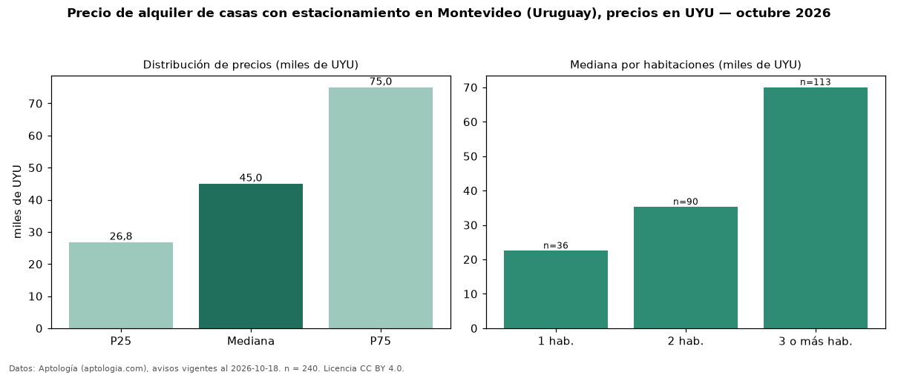

Precio de alquiler de casas con estacionamiento en Montevideo (Uruguay), precios en UYU — octubre 2026
UYU 45.000 al mes es el canon mediano de casas con estacionamiento en alquiler en Montevideo (Uruguay) (n = 240 avisos). Eso es 17 % más que la mediana de todas las casas en alquiler de Montevideo (UYU 38.500, n = 493); este segmento reúne el 49 % de esos avisos. Por metro cuadrado, la mediana es UYU 409/m² al mes (n = 227), 2 % por encima del conjunto de referencia (UYU 400/m²). La mitad central de los avisos va de UYU 26.800 a UYU 75.000 (razón 2,8), una dispersión alta. El área mediana anunciada es 110 m². El segmento con más oferta es el de 3 o más habitaciones (113 avisos, mediana UYU 70.000); pasar de 1 habitación a 3 o más habitaciones cambia la mediana +211 %. La cuota de mantenimiento o condominio mediana declarada es UYU 6.000 al mes (n = 16), aparte del canon. Datos: Aptología (aptologia.com), CC BY 4.0 — https://www.aptologia.com/uy/alquiler/montevideo. Archivos: PDF, CSV con las cifras y gráfica PNG.

| Avisos únicos | 240 |
|---|---|
| Percentil 25 | COP 26.800 |
| Mediana | COP 45.000 |
| Percentil 75 | COP 75.000 |
| Mediana por m² | COP 408 |
Fuente: avisos vigentes de portales inmobiliarios recopilados por Aptología, deduplicados (mínimo 30 avisos únicos por celda). Precios pedidos, no cerrados. Fecha: 2026-10-18.